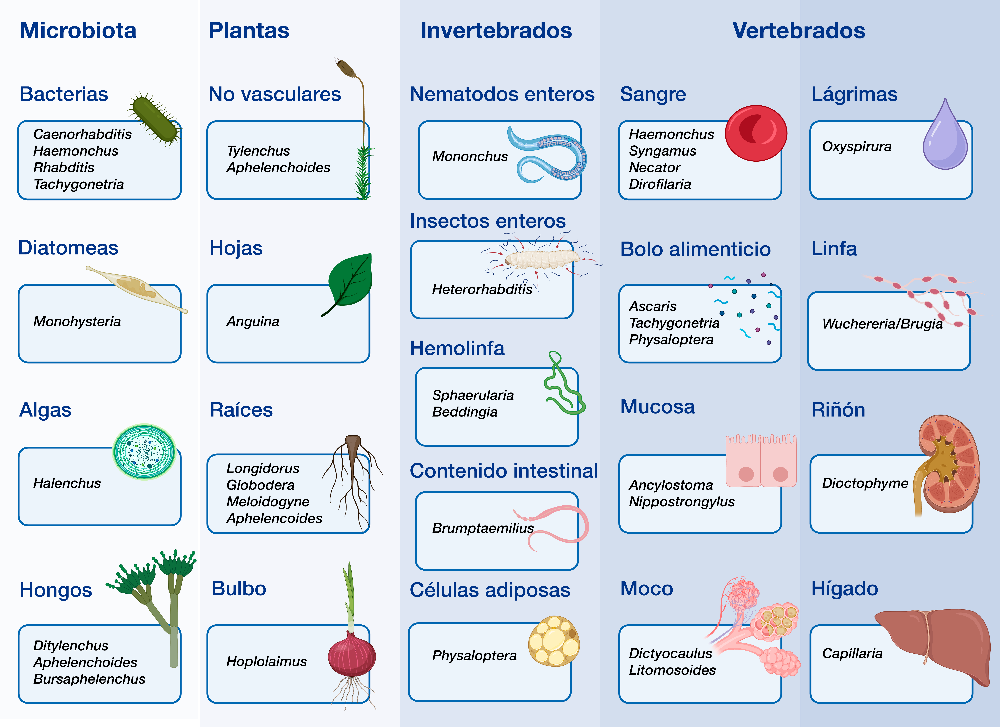

×
Decraemer W, Magnusson C, Bert W.
Morphological and molecular characterisation of Trichodorus hellalae n. sp. (Nematoda: Trichodoridae) from Norway.
Eur J Plant Pathol. 2021;161(1):91–105. doi.org/10.1007/s10658-021-02306-8.
Figura 10

Fuentes de alimentación de algunos nematodos.
Inspirado en Munn y Munn.
(69)